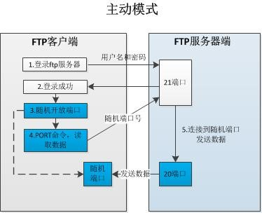
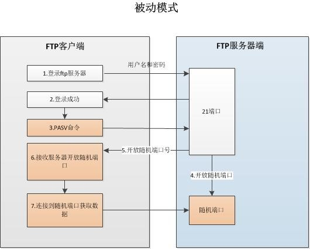

FTP简介
FTP是TCP/IP网络上两台计算机传送文件的协议，FTP是在TCP/IP网络和INTERNET上最早使用的协议之一。尽管World Wide Web(WWW)已经替代了FTP的大多数功能，FTP仍然是通过Internet把文件从客户机复制到服务器上的一种途径。FTP客户机可以给服务器发出命令来下载文件，上传文件，创建或改变服务器上的目录。原来的FTP软件多是命令行操作，有了像CUTEFTP这样的图形界面软件，使用FTP传输变得方便易学。主要使用它进行“上载”。即向服务器传输文件。由于FTP协议的传输速度比较快，我们在制作诸如“软件下载”这类网站时喜欢用FTP来实现，同时我们这种服务面向大众，不需要身份认证，即“匿名FTP服务器”。
FTP使用TCP协议作为底层传说协议，提供了数据传输的可靠性，FTP的标准端口为20，21，20是数据端口，21位指令接口。
FTP主动模式

FTP被动模式

主动模式与被动模式的比较：
主动FTP对FTP服务器的管理和安全很有利，但对客户端的管理不利，因为FTP服务器企图与客户端的高位随机端口建立连接，而这个端口很有可能被客户端的防火墙阻塞掉。被动FTP对FTP客户端的管理有利，但对服务器端的管理不利。因为客户端要与服务器端建立两个连接，其中一个连到一个高位随机端口，而这个端口很有可能被服务器端的防火墙阻塞掉。目前，ftp服务器一般工作在被动模式。
vsftpd服务
常见的FTP服务器程序
IIS（FTP）、Serv-U
wu-ftpd、Proftpd
vsftpd（Very Secure FTP Daemon）
vsftpd 是“very secure FTP daemon”的缩写，安全性是它的一个最大的特点。vsftpd 是一个 UNIX 类操作系统上运行的服务器的名字，它可以运行在诸如 Linux、BSD、Solaris、 HP-UNIX等系统上面，是一个完全免费的、开发源代码的ftp服务器软件，支持很多其他的 FTP 服务器所不支持的特征。比如：非常高的安全性需求、带宽限制、良好的可伸缩性、可创建虚拟用户、支持IPv6、速率高等。
使用以下命令安装vsftpd:
1 | yum install –y vsftpd |
vsftpd主配置文件
vsftpd的主配置文件/etc/vsftpd/vsftpd.conf
1 | 是否允许匿名用户访问，匿名用户访问的时候是被映射为系统的ftp用户，它的家目录为/var/ftp，故我们用匿名访问的时候，访问的是/var/ftp的目录（这个目录的权限请不要随意改动，如果改动可能造成无法访问）。 |
FTP用户
vsftpd使用用户作为管理单位，想要访问某个ftp共享文件，必须使用特定的用户身份登录，我们可以配置一下几种类型的用户：
- 正常用户（系统用户）
- 匿名用户（anonymous）
- 虚拟用户(ftp-only)
默认情况下，vsftpd在安装的时候会创建一个ftp用户，这个用户就是作为匿名用户使用，ftp用户默认的家目录指向的是/var/ftp。任何没有访问限制的问价都可以通过匿名用户共享。
每一个系统中的用户都可以通过ftp方式访问自己的家目录。
匿名用户共享
vsftpd安装好之后可以直接启动使用，不需要进行任何配置，默认的情况下匿名用户可以登录使用，普通系统中的用户可以通过ftp方式访问自己的家目录。
命令行工具
lftp
我们可以通过lftp命令作为ftp客户端使用，通过以下命令安装lftp
1 | yum install –y lftp |
匿名用户上传
默认情况vsftpd只允许匿名用户访问，但是不允许使用匿名用户上传文件，我们可以通过以下方式配置匿名用户上传：
1 | 修改vsftpd.conf |